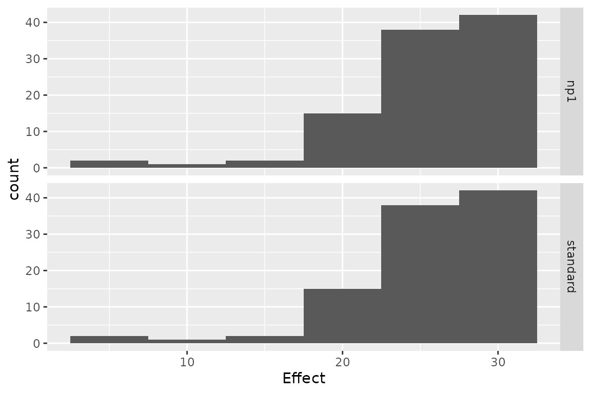
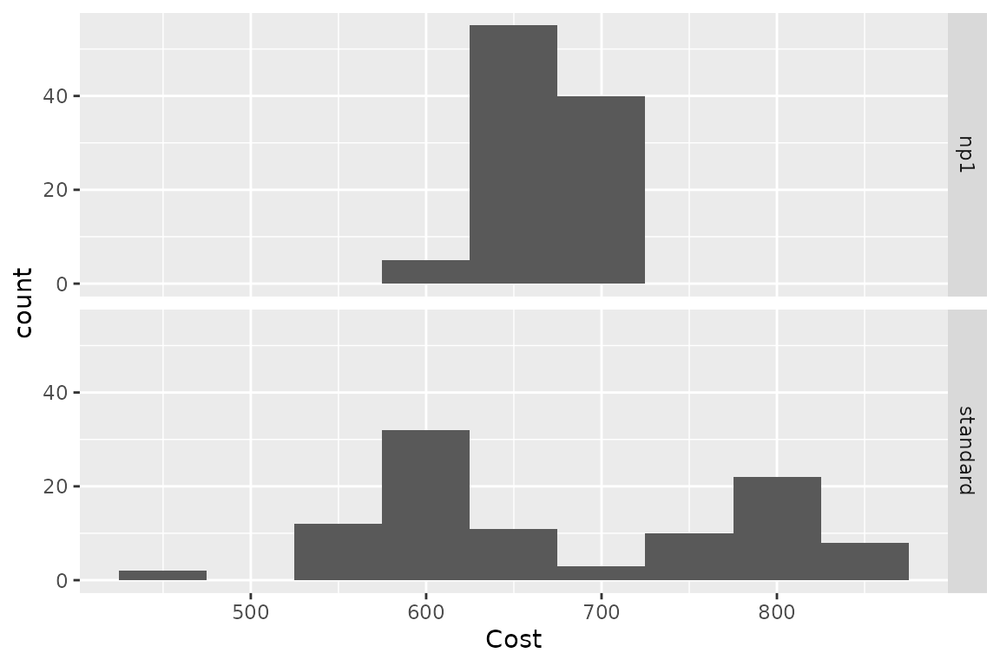
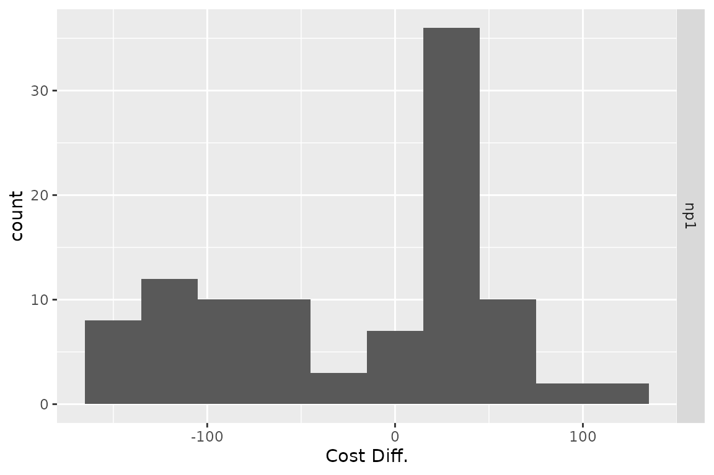

Heterogeneity & Demographic Analysis
2024-02-06
Source:vignettes/g_heterogeneity.Rmd
g_heterogeneity.RmdIntroduction
Heterogeneity analysis is a way to explore how the results of a model can vary depending on the characteristics of individuals in a population, and demographic analysis estimates the average values of a model over an entire population.
In practice these two analyses naturally complement each other: heterogeneity analysis runs the model on multiple sets of parameters (reflecting different characteristics found in the target population), and demographic analysis combines the results.
For this example we will use the result from the assessment of a new
total hip replacement previously described in
vignette("d-non-homogeneous", "heemod").
Population characteristics
The characteristics of the population are input from a table, with one column per parameter and one row per individual. Those may be for example the characteristics of the indiviuals included in the original trial data.
For this example we will use the characteristics of 100 individuals,
with varying sex and age, specified in the data frame
tab_indiv:
tab_indiv## # A tibble: 100 × 2
## age sex
## <dbl> <int>
## 1 59 1
## 2 53 0
## 3 73 1
## 4 57 0
## 5 68 0
## 6 67 0
## 7 64 0
## 8 76 0
## 9 42 1
## 10 67 0
## # ℹ 90 more rows
library(ggplot2)
ggplot(tab_indiv, aes(x = age)) +
geom_histogram(binwidth = 2)
Running the analysis
res_mod, the result we obtained from
run_model() in the Time-varying Markov models
vignette, can be passed to update() to update the model
with the new data and perform the heterogeneity analysis.
res_h <- update(res_mod, newdata = tab_indiv)## No weights specified in update, using equal weights.## Updating strategy 'standard'...## Updating strategy 'np1'...Interpreting results
The summary() method reports summary statistics for
cost, effect and ICER, as well as the result from the combined
model.
summary(res_h)## An analysis re-run on 100 parameter sets.
##
## * Unweighted analysis.
##
## * Values distribution:
##
## Min. 1st Qu. Median Mean
## standard - Cost 543.4622561 611.7003169 632.979866 693.1061838
## standard - Effect 14.7166852 23.3226486 27.255222 26.0739324
## standard - Cost Diff. - - - -
## standard - Effect Diff. - - - -
## standard - Icer - - - -
## np1 - Cost 618.8657194 637.3702687 643.532617 660.6072877
## np1 - Effect 14.8551230 23.4706053 27.540020 26.3343570
## np1 - Cost Diff. -163.3805212 -99.5031416 10.552752 -32.4988961
## np1 - Effect Diff. 0.1076059 0.1948185 0.220806 0.2604246
## np1 - Icer -353.6267974 -304.0330575 60.195636 -45.0176379
## 3rd Qu. Max.
## standard - Cost 786.6690449 875.943516
## standard - Effect 30.1641006 31.299481
## standard - Cost Diff. - -
## standard - Effect Diff. - -
## standard - Icer - -
## np1 - Cost 687.1659033 712.562995
## np1 - Effect 30.3849066 31.532860
## np1 - Cost Diff. 25.6699518 75.403463
## np1 - Effect Diff. 0.3272774 0.462014
## np1 - Icer 125.6095479 700.737016
##
## * Combined result:
##
## 2 strategies run for 60 cycles.
##
## Initial state counts:
##
## PrimaryTHR = 1000L
## SuccessP = 0L
## RevisionTHR = 0L
## SuccessR = 0L
## Death = 0L
##
## Counting method: 'beginning'.
##
## Values:
##
## utility cost
## standard 26073.93 693106.2
## np1 26334.36 660607.3
##
## Efficiency frontier:
##
## np1
##
## Differences:
##
## Cost Diff. Effect Diff. ICER Ref.
## np1 -32.4989 0.2604246 -124.792 standardThe variation of cost or effect can then be plotted.
plot(res_h, result = "effect", binwidth = 5)
plot(res_h, result = "cost", binwidth = 50)
plot(res_h, result = "icer", type = "difference",
binwidth = 500)
plot(res_h, result = "effect", type = "difference",
binwidth = .1)
plot(res_h, result = "cost", type = "difference",
binwidth = 30)
The results from the combined model can be plotted similarly to the
results from run_model().
plot(res_h, type = "counts")
Weighted results
Weights can be used in the analysis by including an optional column
.weights in the new data to specify the respective weights
of each strata in the target population.
tab_indiv_w## # A tibble: 100 × 3
## age sex .weights
## <dbl> <int> <dbl>
## 1 46 0 0.366
## 2 62 1 0.170
## 3 46 1 0.540
## 4 61 0 0.583
## 5 70 0 0.994
## 6 75 1 0.364
## 7 57 0 0.610
## 8 69 0 0.368
## 9 66 1 0.354
## 10 57 1 0.148
## # ℹ 90 more rows
res_w <- update(res_mod, newdata = tab_indiv_w)## Updating strategy 'standard'...## Updating strategy 'np1'...
res_w## An analysis re-run on 100 parameter sets.
##
## * Weights distribution:
##
## Min. 1st Qu. Median Mean 3rd Qu. Max.
## 0.001844 0.186802 0.440420 0.463716 0.718173 0.993913
##
## Total weight: 46.37155
##
## * Values distribution:
##
## Min. 1st Qu. Median Mean
## standard - Cost 438.70535048 613.9316623 629.4156466 684.383498
## standard - Effect 6.12465030 24.4991251 26.7297859 25.872810
## standard - Cost Diff. - - - -
## standard - Effect Diff. - - - -
## standard - Icer - - - -
## np1 - Cost 590.76054210 637.9767000 642.1877946 658.142844
## np1 - Effect 6.13624942 24.8264025 27.1045630 26.124515
## np1 - Cost Diff. -163.38052116 -99.5031416 12.7721479 -26.240654
## np1 - Effect Diff. 0.01159912 0.1948185 0.2134551 0.251705
## np1 - Icer -353.62679735 -304.0330575 60.1956359 2.511116
## 3rd Qu. Max.
## standard - Cost 786.6690449 875.943516
## standard - Effect 29.0596426 31.529255
## standard - Cost Diff. - -
## standard - Effect Diff. - -
## standard - Icer - -
## np1 - Cost 687.1659033 712.562995
## np1 - Effect 29.2683350 31.765192
## np1 - Cost Diff. 24.0450377 152.055192
## np1 - Effect Diff. 0.3272774 0.462014
## np1 - Icer 115.2176112 13109.195655
##
## * Combined result:
##
## 2 strategies run for 60 cycles.
##
## Initial state counts:
##
## PrimaryTHR = 1000L
## SuccessP = 0L
## RevisionTHR = 0L
## SuccessR = 0L
## Death = 0L
##
## Counting method: 'beginning'.
##
## Values:
##
## utility cost
## standard 25872.81 684383.5
## np1 26124.52 658142.8
##
## Efficiency frontier:
##
## np1
##
## Differences:
##
## Cost Diff. Effect Diff. ICER Ref.
## np1 -26.24065 0.251705 -104.2516 standardParallel computing
Updating can be significantly sped up by using parallel computing. This can be done in the following way:
- Define a cluster with the
use_cluster()functions (i.e.use_cluster(4)to use 4 cores). - Run the analysis as usual.
- To stop using parallel computing use the
close_cluster()function.
Results may vary depending on the machine, but we found speed gains to be quite limited beyond 4 cores.